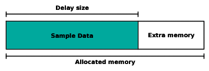
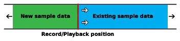
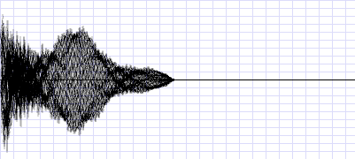
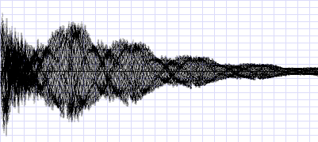
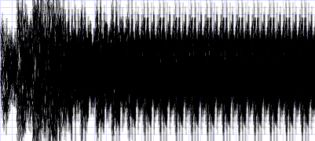
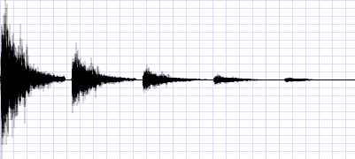
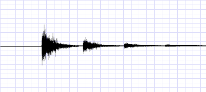

|
Maxmod
|
Maxmod can take advantage of the special sound capturing hardware to produce simple reverb. The reverb is done completely by the sound hardware and requires no additional work by the CPU.
The reverb unit is controlled through the mmReverbConfigure() function. It takes somewhat flexible input data and sends a variable amount of data to the ARM7 to process.
Before configuring the reverb unit, you must call mmReverbEnable() to initialize the system.
The reverb unit consists of 2 channels (left speaker/right speaker) which each have 7 registers that control their operation. The configuration function can set one or more of the registers to a certain value. Here's an example to change the feedback level of the left output to 80%.
The flags member of the configuration struct selects which data in the structure is valid and should be sent to the reverb unit. In this case, we want to change only the feedback register.
By selecting MMRF_LEFT in the flags, this operation will affect the left reverb output. We can also select MMRF_RIGHT to affect the right output, or even MMRF_BOTH (which is equivalent to MMRF_LEFT|MMRF_RIGHT) to apply the settings to both outputs.
The feedback register ranges from 0->2047, so this is 80%.
This article will describe each register in full detail.
The delay register is used to set the amount of delay there will be between the dry sound and reverbed (wet) sound. The delay value is actually a measurment of memory. It measures the size of the memory required for the delay buffer.

The above diagram displays a block of memory (see Memory register), with a region of it used for sampled data. While reverb is active, the existing sampled data in the delay buffer is output to the speakers, and new data is sampled into it.

In Figure 1.2 we see an example of the delay ring buffer, looking at the area that is being written to (and read). As the playback position moves through the buffer, newly sampled data is written just behind the played sample. Then the playback position has to loop through the whole delay buffer before it reaches the sampled data it wrote earlier, this gives the delay effect.
Note that when you first start the reverb, unknown data will be played during the first loop through the ring buffer, you should clear the delay buffer to zero before starting the reverb to avoid playing temporary invalid data.
Before you set the delay, make sure that your allocated memory region is large enough to hold the sampled data required. The easy way to guess this is allocating memory with size equal to the amount you write to the delay register (measured in words).
The size of the delay buffer depends on three things. The delay amount, the sampling rate, and the sampling format. The formula to calculate the amount of bytes required is: *(delay * format * rate) / 1000*. In the formula, delay is measured in milliseconds, format may be 8 or 16 meaning 8-bit or 16-bit, and rate is the sampling rate measured in Hertz. There is a function to calculate this amount (and return number of words). See mmReverbBufferSize().
To set the delay, add MMRF_DELAY to the flags and store the new delay setting in the delay member. Again, the value to be written to it is the size of the delay buffer measured in words.
The feedback register is used to control the volume of the sampled data that is feed back into the hardware mixer. This can be thought of as the volume of the reverb.

Above we see a computer generated image displaying a dry sample. This is the output you will get with 0% feedback.

Now we see the same sample with reverb/echo applied to it. You can see the sample pattern repeating at decreasing levels of volume. The space between repeating patterns is controlled by the delay setting.

And now, we see output that is corrupted from too much feedback! You must take care not to specify a feedback level that is too high, or else the feedback may grow too large and cover the output.
To set the feedback, add MMRF_FEEDBACK to the flags and store the new setting in the feedback member. The feedback value ranges from 0 to 2047 which represents 0% to 100%.
Next, we have the panning register. This register controls which speakers will output the reverbed sound.
After the sound data is captured from the left or right mixers with previous reverb feedback applied, the sound may be panned to another position. For example, the left reverb channel captures the output from the left speaker. The left reverb channel can then output the affected sound through the right speaker with a certain panning setting.
To change the panning value, add MMRF_PANNING to the flags and store the new value in the panning member. The panning value ranges from 0 to 127. Specifying 0 will make the sound output to the left 100%. 127 will output the sound to the right 100%. Values between 0->127 will output a certain fraction of the sound to both speakers. 64 will output an equal amount to both speakers.
There's also a special flag, MMRF_INVERSEPAN, that you can use when applying panning to both channels. If MMRF_BOTH and MMRF_INVERSEPAN are used together, then the panning of the left channel will be set to the normal specified value, and the panning of the right channel will be set to an inversed value (128-value).
The memory register holds the memory address of your reverb buffer. You must specify the memory address in this register before starting reverb output. The size of memory required depends on three things (I'll repeat them): the delay, the sampling rate, and the output format. You can calculate the amount memory required with the mmReverbBufferSize() function. The reverb channels can not share the same memory region, one region must be allocated for each channel.
To assign a memory region to a reverb channel, add MMRF_MEMORY to the flags, and store the memory address in the memory entry.
If MMRF_BOTH and MMRF_MEMORY are used together, the delay setting (even if not selected) will be added to the memory address for the right channel.
This is a simple setting that controls wether the dry output from the hardware mixer is to be heard with the reverb.

Above we see the output when the dry output is enabled. This is usually the desired output.

Now we see the same output, except without the dry source at the beginning. This feature might be useful under certain conditions.
To switch the dry output on or off add MMRF_DRYLEFT, MMRF_NODRYLEFT, MMRF_DRYRIGHT, and/or MMRF_NODRYRIGHT to the flags to issue the command.
This setting controls the sampling rate for a reverb channel. Higher sampling rates offer better quality at the cost of a higher memory requirement. The value of this register is a frequency divider. The value for this register can be calculated with the formula 2^24 / Hertz.
Note that changing this value affects the scale of the delay register. If you want to keep the same delay, you must recalculate the delay value after modifying this register.
Also note that if you change the sampling rate while the reverb is active, there will be a pitch shift in the reverb output from playing previously sampled data (which was sampled at a different rate). The pitch shift will be present until one cycle of the reverb buffer passes.
To set the sampling rate, add MMRF_RATE to the configuration flags with the new rate stored in the rate entry. The sampling rate shouldn't exceed 32768 Hz and cannot drop below 256 Hz.
By default, the reverb is set to capture 16-bit data from the mixer. 16-bit data provides much higher quality, but 8-bit data provides half of the memory load.
To switch the channels into a different format, add MMRF_8BITLEFT/MMRF_8BITRIGHT/MMRF_16BITLEFT/MMRF_16BITRIGHT to the flags to activate the format change command.
This setting cannot be changed while the reverb is active. If the reverb is active when this setting is affected, the reverb output will be switched off.
Finally, to start the reverb, use mmReverbStart(). The function takes one parameter which selects which reverb channels to start. Pass MMRC_LEFT, MMRC_RIGHT, or MMRC_BOTH.
To stop the reverb, use mmReverbStop(). The function takes a parameter just like the starting function.
Before starting the reverb, you must configure the other reverb registers first.
Here is an example that configures the reverb unit.
For a better understanding, please have a look at the reverb example source code.